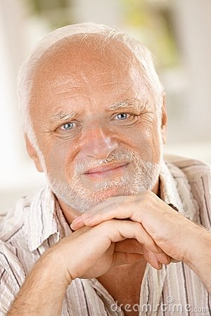

Bildbyte (attr) & Bildbyte rollover-effekt

Klicka på knappen nedan för rollover effekt på bilden
Dynamisk grafik med HTML5-elementet canvas
Rita raka linjer och kurvlinjer
Rita bézier-kurvor och former ifyllda med både färg, mönster och
gradienter
Rita text (exempelvis dagens datum/tid)
Använda transparens och skuggor
Lägga till en eller flera bitmappad bilder
Använda en teknik för att spara bilden